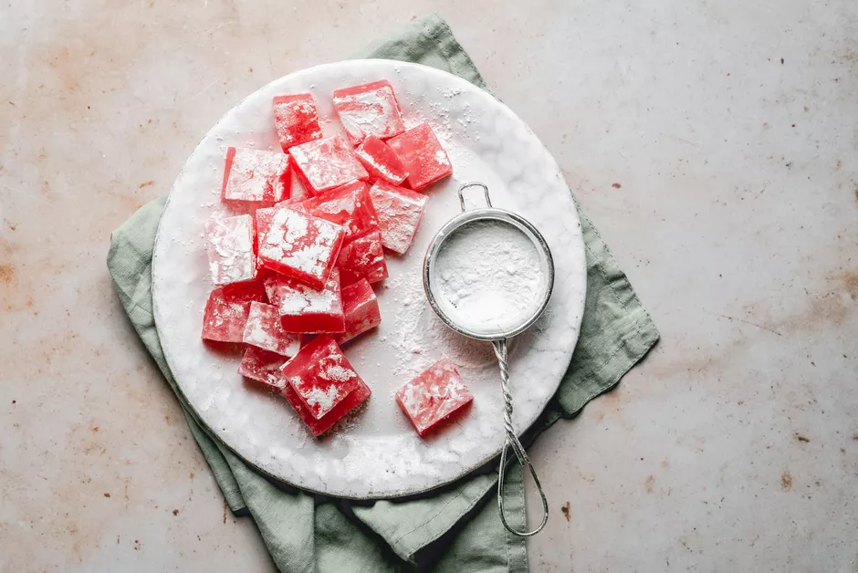

Turkish Delight

Description
The Turkish name for this confection, lokma or lokum, means morsel, and these sweet squares are exactly that: a delicately chewy treat, perfectly sweetened, and infused with the fascinating and sweet flavor of either rosewater, bergamot, lemon, or mastic. Dates, pistachios, hazelnuts, and walnuts are bound in a gel-like concoction that is then perfumed with other flavors and colored by food coloring or natural ingredients. The squares are dusted with icing sugar, cream of tartar, or copra (dried coconut meat) to avoid sticking and caking, and are usually sold by the pound or in decorative, festive boxes with different flavors.
Ingredients
- 4 cups granulated sugar
- 4 1/2 cups water, divided
- 2 teaspoons lemon juice
- 1 1/4 cups cornstarch
- 1 teaspoon cream of tartar
- 1 1/2 tablespoons rose water
- 2 drops red food coloring, optional
- 1 cup confectioners' sugar
Prep Steps
- Gather the ingredients. Prepare a 9 x 9-inch pan by lining it with aluminum foil and spraying the foil with nonstick cooking spray. Set aside.
- Place the granulated sugar, 1 1/2 cups of the water, and lemon juice in a medium saucepan over medium heat. Stir until the sugar dissolves and bring the mixture to a boil.
- Brush down the sides of the pan with a wet pastry brush to prevent sugar crystals from forming and insert a candy thermometer to keep track of the temperature.
- Allow the sugar mixture to continue boiling, without stirring, until it reaches 240 F on the candy thermometer. This process can take from 45 minutes to an hour. When the sugar syrup is around 225 F, gather the rest of the candy ingredients.
- Remove the pan from the heat and stir the rosewater and the food coloring into the preparation.
- Pour the candy into the prepared pan and allow it to set uncovered overnight.